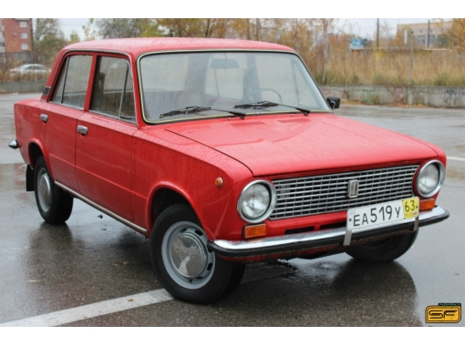
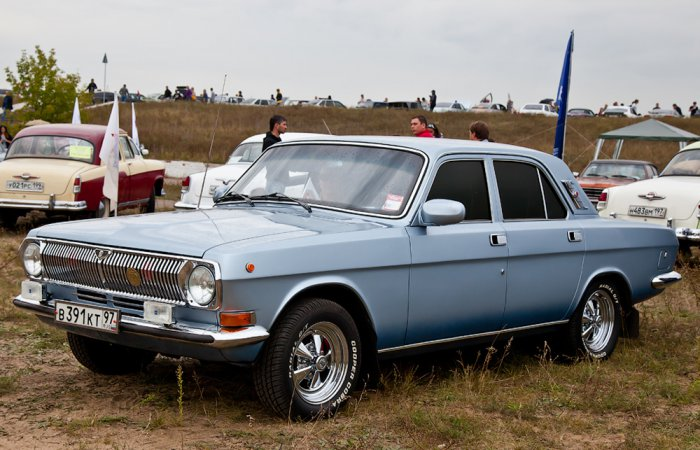

Azlka
Москвич-2140 является выпускавшимся в СССР автомобилем малого класса с кузовом типа «седан». Основным местом его производства был Автозавод имени Ленинского комсомола или АЗЛК. Годы выпуска с 1976 по 1989. На эту машину устанавливались имевшие объёмом полтора литра двигателя УМЗ-412. С технической точки зрения автомобиль представлял собой глубокую модернизацию другого «Москвича» под индексом 408-ой.
Vaz
ВАЗ-2101 «Жигули» — легковой заднеприводный автомобиль с кузовом типа седан. Первая модель, выпущенная на Волжском автомобильном заводе. За основу был взят Fiat 124 модели 1966 года в базовой комплектации (с 1,2-литровым двигателем и отделкой салона начального уровня). Конкретным прототипом был Fiat 124R («Russia») - фактически, ВАЗ-2101 итальянской мелкосерийной сборки, участвовавший в многочисленных испытаниях. Конструкция была доработана с учётом советских условий — увеличен дорожный просвет, усилены подвеска и кузов, задние дисковые тормоза заменены на барабанные как более стойкие к загрязнению и долговечные, добавлен «кривой стартер» (пусковая рукоятка двигателя). Снаружи появилось наружное зеркало заднего вида (слева), ручки дверей стали травмобезопасными утопленными. Была существенно изменена конструкция двигателя — распредвал перенесён в головку, увеличено расстояние между цилиндрами (чтобы можно было наращивать их диаметр). Масса автомобиля увеличилась на 90 кг. Всего в конструкцию «Фиата» было внесено более 800 изменений, как итальянской, так и советской сторонами.